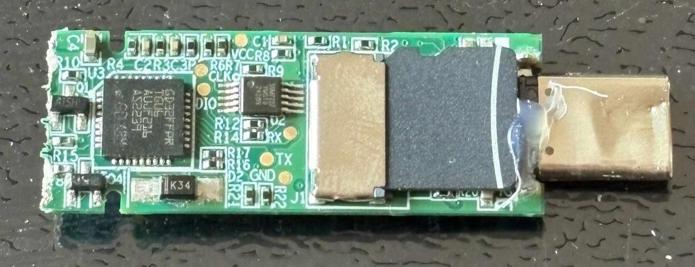

Research index
Breaking Encrypted USB Drives
This page collects my research on encrypted USB drives and USB copy-protection software. Despite the promise to keep your files safe, they often fail completely.
The failures take different forms: files stored without encryption, passwords exposed over USB, fixed keys and backdoor accounts in software, and sign-in checks that can be bypassed with a direct device command.

Findings by vendor#
The affected products have different failure modes. A password bypass, exposed key, and unencrypted media are distinct findings.
Lenovo
ThinkPlus FU100 · TSD303
FU100: Files were stored without encryption on an internal SD card; fingerprint authentication gated the USB connection. TSD303: The drive originally returned the correct password in plaintext to host software over USB. A first fix still exposed it through reversible encryption. Lenovo fixed the vulnerabilities, issued an advisory, and assigned three CVEs.
Talk slidesLenovo advisoryCVE-2025-13453CVE-2025-13454CVE-2025-13455
Netac
NetacFileLock
Files are encrypted with AES, but the key is fixed and hardcoded in the executable. Fast mode encrypts only one third of certain file types. The user password is checked separately from the content key.
SecZure
YutianDun
The tested drives contained a backdoor in the technical sense: two built-in accounts with fixed passwords held wrapped copies of the content identifier, allowing decryption without the administrator password. This does not imply malicious intent. An earlier study bypassed the bundled reader's copy protection from inside its process.
KakaSoft
USB Copy Protection 5.6.0.299
“Normal” did not encrypt files; “High” scrambled only a prefix. For the tested “Highest” Blowfish setting, the software derived its own decryption password from an embedded seed. I used that password to recover a protected test file without knowing the user's password.
Nexcopy
Copy Secure · Drive Wizard 1.0.81
The viewer held a fixed value that decrypted a configuration file containing the content key and IV needed to decrypt protected files.
PIODATA
SecureX · PC Secure Log-in Software 1.3.2.7
The Google/Apple sign-in and PIN checks could be bypassed, allowing the drive to be unlocked and its files read. The unlock value was calculated with SM3 from device data readable before login and a constant in the Windows app. SM3 is an unusual choice for a company that lists a U.S. address.
Newly published result
Lexar
F35 Pro fingerprint USB
The USB device transfers the correct user password to the Windows FingerTool software in plaintext. That password can then be used to unlock the drive. Lexar confirmed the issue, provided a firmware-updated replacement, and I verified that the issue was resolved on that replacement.
Newly published result
Shared SDK survey
Additional devices
My broader survey found the same SDK family used by Lenovo devices across these products.
| Vendor | Device | Observation |
|---|---|---|
| MoveSpeed | 128GB | Cleartext password disclosure |
| MoveSpeed | GD10 1TB | Unencrypted storage on microSD |
| EAGET | 128GB USB | Cleartext password disclosure |
| EAGET | FM6 1TB | Cleartext password disclosure |
| EAGET | 64GB | AES-encrypted password sent to computer |
| NEWQ | FS01 128GB | Cleartext password disclosure |
| NEWQ | D3 32GB | AES-encrypted password sent to computer |
| onemodern | 256GB PSSD | Cleartext password disclosure |
Publications#
My talks and writing on this research.
- 2026 · ArticleDiscovering a Backdoor and Flaws in More Encrypted USB Drives
Binary Ninja blog; SecZure, Netac, KakaSoft, and Nexcopy.
- 2026 · TalkBreaking Encrypted USB Drives with Time-Travel Debugging
RE//verse 2026. Slides.
- 2024 · ArticleExamining USB Copy Protection
Paged Out!, issue 5. Earlier work on the SecZure reader.
CVEs#
- Lenovo · 2025CVE-2025-13453
Physical access to certain ThinkPlus USB drives could allow reading stored data.
- Lenovo · 2025CVE-2025-13454
A locally authenticated user could access sensitive device information through ThinkPlus configuration software.
- Lenovo · 2025CVE-2025-13455
A locally authenticated user could bypass device authentication and register an untrusted fingerprint.
Media coverage and discussion#
155 entries in 22 languages. A short selection from the Hacker News discussion and the reporting collected in my coverage archive.
- Tom’s HardwareReporting with Lenovo’s response
- Hacker NewsDiscussion of the research
- HackingPassionDetailed account of the RE//verse findings
- GIGAZINEJapanese coverage
- IT HomeChinese coverage
- Golem.deGerman coverage
- HackadaySecurity roundup
- Security Now!Episode 1103 discussion
Read more
More reports
- The Pressed Pixel
- Azure Informatique
- Dr. Web
- PC Central
- TekCafe
- NeoTeo
- APPI News
- Runtime Chronicle
- XMX
- Cyberexy
- TechsCurrent
- Telset Indonesia
- Merhabyte
- Terragames
- IMP360
- Leo Deveras
- AppDisqus
- PVSM
- ITHardware
- Gront
- PixelNerd
- Tech Planet
- Playtech Romania
- NewsBytes
- DiarioBitcoin
- PRPort
- Rohtext
- Hoyenia
- Mezha French edition
- DNS Club Russia
- Parlament Ukraine
- NNets Russia
- Itzine Russia
- Phoenix Technology original
- SECNEWS UK
- Magica
- DigiNews Russia
- The Modern
- Techolam
- Guanlan Rizhi China
- TheLab Greece
- Speka Ukraine
- OnDevices Russia
- Finansial Fokus Indonesia
- Hit Romania
- TECC Uzbekistan report 1
- TECC Uzbekistan report 2
- Chip Dispatch
- Technetbook
- TechNewsReel
- International Cyber Digest newsletter
- BYTERMINAL
- MacGeneration
- iMagazine
- TeknikGeek
- ITonline
- Geekpedia
- iXBT
- Génération NT
- Research Snipers
- ComputerKing HK
- THAI DATA
- Börse Express
- Carte électronique
- Macarel
- Anlık Gündem
- Callme.by
- TechmanNews
- Techtember
- Tech Prolonged
- DCFever
- Hardware Upgrade
- HDblog
- WinFuture
- Matrice Digitale
- SUE NEWS
- CEVIU Segurança da Informação
- NeoTeo Italian edition
- Mezha Japanese edition
- Hamyar IT
- Sekurak
- LAB247
- MezoSoft
Discussion and syndication
- Reddit r/technology
- Windows Forum
- Quasarzone
- Phoenix Technology via Tiger Brokers
- Yahoo Tech syndication
- Sohu
- Ifeng Technology
- Sina Technology
- SMZDM consumer post 1
- SMZDM consumer post 2
- SMZDM consumer post 3
- GeekNews Korea
- iKanchai Phoenix republication
- cnBeta mobile
- SMZDM consumer post 4
- Malware News repost
- GeekNews French edition
- GeekNews Portuguese edition
- Quasarzone news translation
- Readen China translation
- Denis Laskov LinkedIn post
- Sina Finance additional repost
- Reddit r/privacy
- Reddit r/technews
- Reddit r/tomshardware
- Reddit r/WhoGreenlitThis
- Reddit r/Computersicherheit
- SMZDM consumer post 5
- SMZDM consumer post 6
- SMZDM consumer post 7
- Agili Hacker Podcast
- Jérémy Magrin
- PCNEWS.ru iXBT repost
- Polscy Programiści Sekurak digest
- RateoDB storage recap
- Juan Peláez digest
Automated summaries and indexes
- ThreadLinqs
- conv.news
- DEV Community digest
- Hamster News AI summary
- XNET AI Persian
- 3Chot daily digest
- RecodeX brief
- Skim AI summary
- Overclock News
- ReadmeX
- DeadStack
- GeekNews German edition
- Audiotale AI article
- Dstld News
- ZeroHour
- DisconfirmAI
- xhtml.jp HN recap
- AmongZero
- GoKawiil brief
- Root Notes digest
- NuAxi story
- Digest AI
- NQ Brief
- The Brief
- The Kernel Post
- Azimuth Daily
- Annanim News
- HN Distilled Spanish
Takeaways#
- Do not trust an encrypted USB drive unless you can verify how it protects your files. Software such as VeraCrypt can provide strong encryption, and its source code can be examined for security.
- Several vendors have issued fixes, yet I have still found older vulnerable versions for sale online. Already produced stock may remain unmodified, so a published fix does not guarantee that the device you buy is fixed. This is another reason to be cautious about encrypted USB drives.
About#
I’m Xusheng Li, a developer of Binary Ninja at Vector 35. I also analyze malware and do security research in my free time.